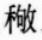

明徐孝編。張元善校。孝順天布衣。元善永城人。彭城伯騏之後。襲封惠安伯。是書凡集篇十卷。分二百部。附拾遺一卷。皆不究說文玉篇之旨。偏旁多誤。若二字。从禾。禾讀若稽。木曲頭也。與禾稼之禾迥異。而乃并入禾部。則於六書本義。茫無考據可知。又集韻十卷。分一百部。附四聲類率譜一卷。等韻一卷。亦不究陸法言孫愐舊法。如并局登等字。於東韻。合箴簪與眞臻同入根韻之類。皆乖舛殊甚。又删十六攝爲十四攝。改三十六母爲二十二母。且改濁平濁入爲如聲。事事皆出剏造。較篇海正韻等書。變亂又加甚焉。